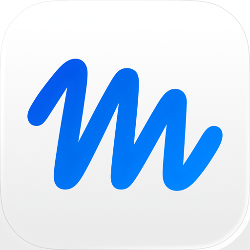

Muse from Meta
安卓安装包 · 版本 14.0.0.4.149 · 41.8 MB
需要安卓 10 或以上系统
下载安卓安装包
安装步骤
- 点上面的蓝色按钮，下载安装包。
- 下载完成后点开文件安装；如果手机提示不允许安装，去设置里允许浏览器「安装未知应用」。
- 打开 Muse，用发给你的邮箱登录：选密码登录（不要选验证码登录），输入密码后再选第一个验证方式。
- 登录时请保持美国或加拿大节点，网络不要中途切换。
苹果手机（iPhone）装不了这个安卓包：请用美国或加拿大区的 App Store 账号，搜索「Muse from Meta」下载。
登录要验证码？去验证码解析 →